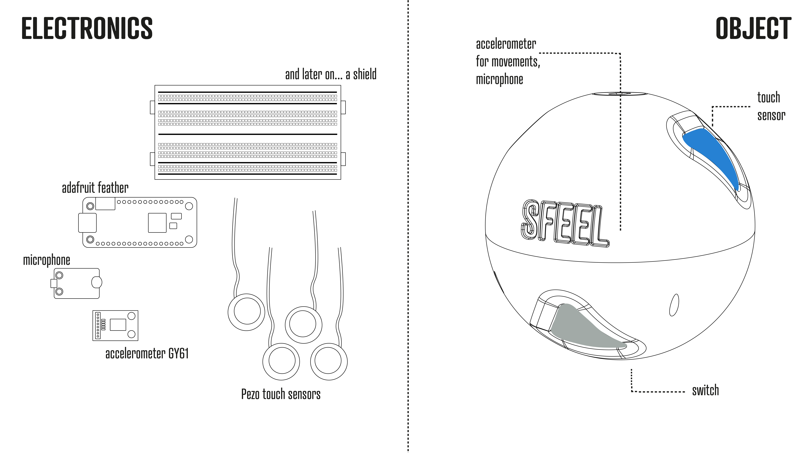

/MICROCHALLENGE_4
(03_june_2022)
You can check the whole project by tapping here: SFEEL.
To develop this fourth and last challenge, I teamed up with Pippa and Borka. We all had in mind to
create some tool that could get information from the environment. The concept moved around a gamified
audiovisual system, to capture the different perceptions of different environments. Capturing
movements, sounds and sensing of materials. Visualizing the movements of the body in space, and the
connection with different materials in the natural or built environment.
We agreed to give that tool the shape of a ball that could have all the sensors needed inside (touch
sensor, gyroscope, microphone, etc.). This form allowed us to move the device around in a really
interactive and intuitive way for any kind of public, from kids to the elderly. This is a sketch of
the concept:
The operation of this tool would be the following: Use the different sensors to get data from the environment, then use Serial communication to send all the values to P5 and finally create a visual representation (either functional or abstract) of the data. Basically, we wanted to have this visual input from movements, touches and sounds that we normally get from a camera but without needing one. Also, we wanted to turn that data into something more artistic and less pragmatic.

After defining the concept, we started with the fabrication by splitting the tasks. Since we were combining many different technologies and processes, we had to work side by side and organise ourselves in the best possible way. The tasks were the following:
- Slice and 3D print every part.
- Create the moulds for the different material samples. Each material had a different procedure (3D printing, CNC milling, laser cutting...).
- Cast and process every material.
- Create the circuit of the device.
- Develop the Arduino code of the program.
- Work on the interface in P5.js.
The thing we struggled with the most was the electronics part. None of our group is an expert in electronics or in coding so we had to get a lot of help from the FabLab team, which worked with us to get all the sensors running and get the data we wanted, and also send the inputs to P5.
At the end of the week, we managed to have everything ready to work but still, we had to solve some troubleshooting with the Bluetooth connection of the ESP32 and we couldn't work on the interface as much as we wanted. However, we are happy with how this first iteration came out and we'll keep working on it the next week. The upcoming tasks will be:
- Make sure Bluetooth connection is working properly.
- Work on the P5 interface.
- Design and mill a shield to connect all the sensors to the controller without the need for a breadboard.
- Adapt the internal structure of the ball to the electronic components.
- Create another version of the ball using other colours and materials.